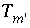

Calculation of the Initial Composition of a Surface
An initial surface-composition calculation is needed if the composition of a surface is not defined explicitly, but is indicated to be in equilibrium with a specified solution composition. In this case, the composition of the surface is not known, only that it is in equilibrium with a solution. The equations for the initial surface-composition calculation are  ,
,  or
or  ,
,  ,
,  , and
, and  , which are equations for mole-balance for each type of surface site in the surface assemblage, the charge-potential relation or charge-balance for each surface (both of these equations are excluded in the non-electrostatic model), mole balance for each element or element valence state, activity of water, and ionic strength.
, which are equations for mole-balance for each type of surface site in the surface assemblage, the charge-potential relation or charge-balance for each surface (both of these equations are excluded in the non-electrostatic model), mole balance for each element or element valence state, activity of water, and ionic strength.
For initial surface-composition calculations, the values of 
include only the aqueous concentrations and the corresponding mole-balance equations  do not contain terms for the contribution of the surfaces to the total element concentrations. All quantities related to the aqueous phase are the same as for the solution without the surface assemblage present.
do not contain terms for the contribution of the surfaces to the total element concentrations. All quantities related to the aqueous phase are the same as for the solution without the surface assemblage present.
For the explicit calculation of the diffuse layer, a charge-balance equation is used for each surface,  ; the values of the master unknowns for each surface type of the surface assemblage,
; the values of the master unknowns for each surface type of the surface assemblage,  and the potential unknowns
and the potential unknowns  , are adjusted to achieve mole balance and charge balance for each surface. If the diffuse-layer composition is not explicitly included in the calculation, then the charge-potential equation
, are adjusted to achieve mole balance and charge balance for each surface. If the diffuse-layer composition is not explicitly included in the calculation, then the charge-potential equation  is used in place of the surface charge-balance equation. If the non-electrostatic model is used for the surface assemblage, then neither the surface charge-balance nor the charge-potential equation is included in the set of equations to be solved.
is used in place of the surface charge-balance equation. If the non-electrostatic model is used for the surface assemblage, then neither the surface charge-balance nor the charge-potential equation is included in the set of equations to be solved.
All equations for initial surface-composition calculations are included as equality constraints in the solver. No equations are optimized and no inequality constraints are included.
An initial surface-composition calculation is performed only if the initial surface is defined to be in equilibrium with a specified solution. The distribution of species for this solution has already been calculated, either by an initial solution calculation or by a batch-reaction or transport calculation. Thus, the values of all master unknowns related to the aqueous phase are known and are used as starting estimates for the surface calculation. The initial estimate of the activity of the master species for each surface is set equal to one tenth of the moles of surface sites for that surface. For explicit and implicit diffuse-layer calculations, the initial estimate of the potential unknown  is zero for each surface, which implies that the surface charge is zero.
is zero for each surface, which implies that the surface charge is zero.
For data input to PHREEQC, definition of the initial surface-composition calculation is made with the
SURFACE data block (see "Description of Data Input").
| Next|| Previous || Top |